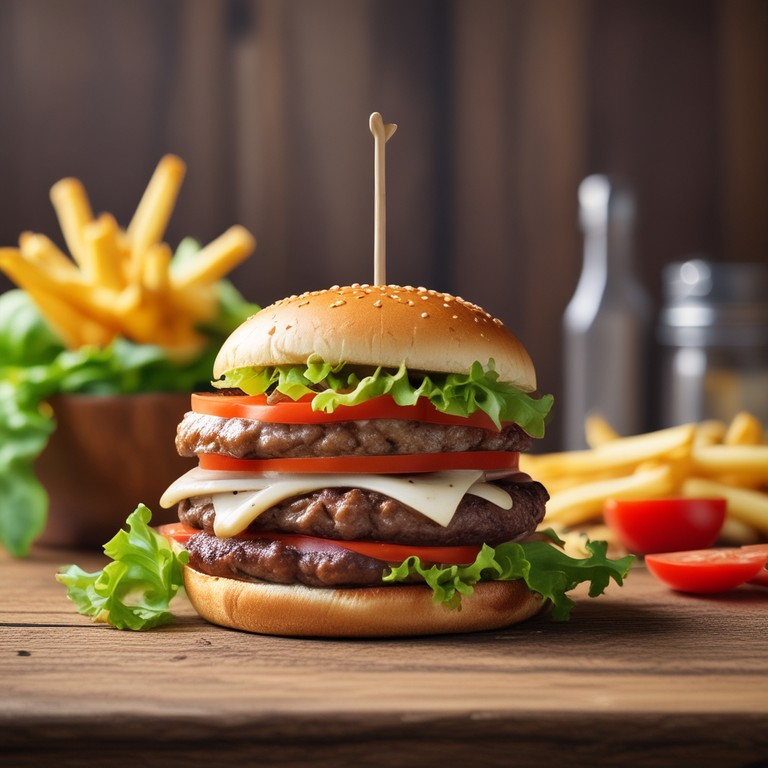
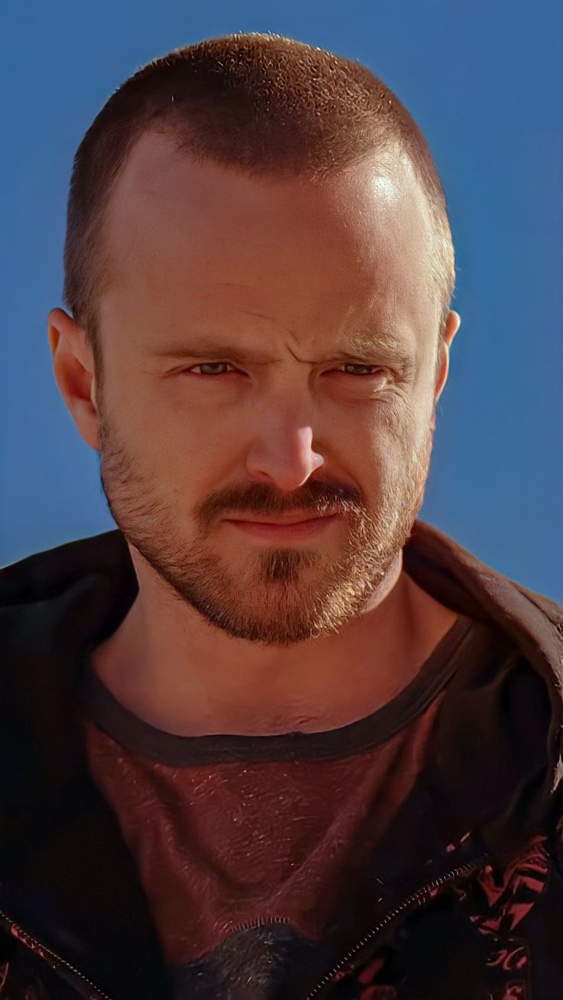
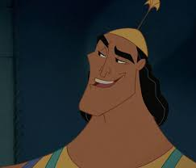
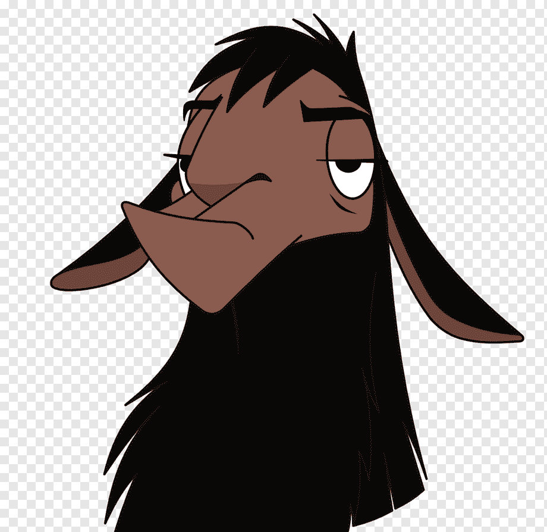

Andrés Silva
Chile, San Pedro de La Paz
Amante de los gatitos y de las papas fritas
Me gusta muchos los gatos, lo dije antes pero los adoro con todo mi corazón, tengo 2 gatitos muy lindos, vivia en Concepción pero me mude a San Pedro de La Paz hace ya uno o dos años, como hogar definitivo hasta obtener la independecia, y además estoy aprendiendo a programar.
• Edit profileSolicitudes de Conexión (2)

Tengo
hambre
Educación
Coding Dojo - Bootcamp de Desarrollo Full Stack
Dic 2024 - ? 2025
Saquenme de estos desafios tan complejos
Tus Conexiones (500+)
-
Walter White
-

Jesse Pinkman
-
Homero Simpson
-

Kronk
-

Emperador Kuzco
-

Kanye West